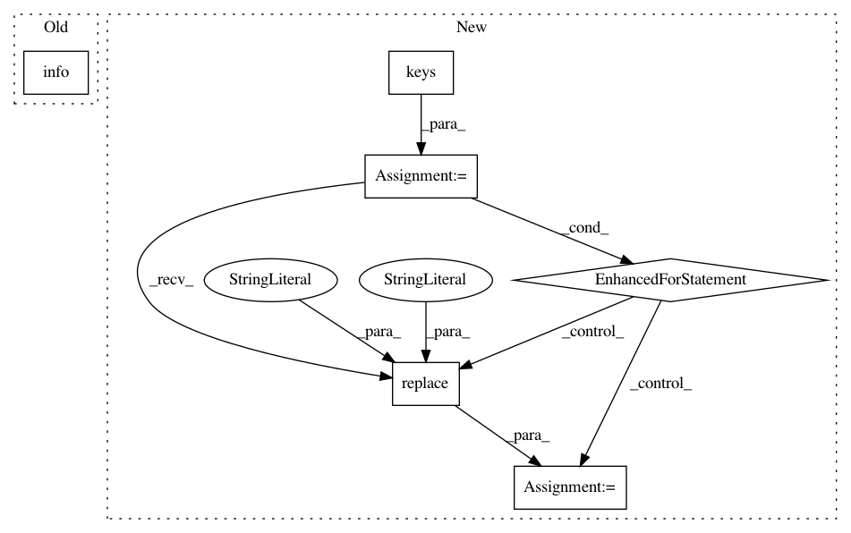

cedf2caddd84592416b1e487690f28e04c77e94f,basicsr/utils/util.py,,check_resume,#Any#Any#,17
Before Change
// set pretrained model paths
opt["path"]["pretrain_model_g"] = osp.join(opt["path"]["models"],
f"net_g_{resume_iter}.pth")
logger.info(
f"Set pretrain_model_g to {opt["path"]["pretrain_model_g"]}")
opt["path"]["pretrain_model_d"] = osp.join(opt["path"]["models"],
f"net_d_{resume_iter}.pth")
logger.info(
After Change
logger = get_root_logger()
if opt["path"]["resume_state"]:
// get all the networks
networks = [key for key in opt.keys() if key.startswith("network_")]
flag_pretrain = False
for network in networks:
if opt["path"].get(f"pretrain_{network}") is not None:
flag_pretrain = True
if flag_pretrain:
logger.warning(
"pretrain_network path will be ignored during resuming.")
// set pretrained model paths
for network in networks:
name = f"pretrain_{network}"
basename = network.replace("network_", "")
opt["path"][name] = osp.join(opt["path"]["models"],
f"net_{basename}_{resume_iter}.pth")
logger.info(f"Set {name} to {opt["path"][name]}")
class ProgressBar(object):
A progress bar that can print the progress.
Modified from:
In pattern: SUPERPATTERN
Frequency: 3
Non-data size: 6
Instances
Project Name: xinntao/BasicSR
Commit Name: cedf2caddd84592416b1e487690f28e04c77e94f
Time: 2020-10-03
Author: wxt1994@126.com
File Name: basicsr/utils/util.py
Class Name:
Method Name: check_resume
Project Name: gyoisamurai/GyoiThon
Commit Name: 5765f471197edbf64a57dd2628dcd3051c7ea46c
Time: 2018-06-04
Author: gyoiler3@gmail.com
File Name: gyoithon.py
Class Name:
Method Name:
Project Name: gyoisamurai/GyoiThon
Commit Name: 4f53bca9b044b20bc4aa8b7719bbbb2984623b3a
Time: 2018-06-04
Author: gyoiler3@gmail.com
File Name: classifier4gyoithon/GyoiClassifier.py
Class Name:
Method Name: